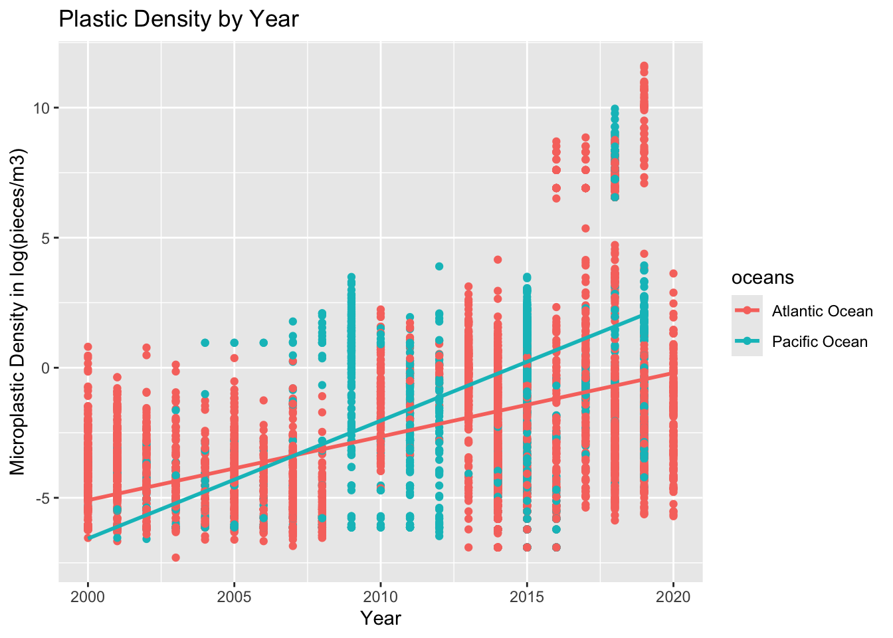

── Attaching core tidyverse packages ──────────────────────── tidyverse 2.0.0 ──
✔ dplyr 1.1.4 ✔ readr 2.1.5
✔ forcats 1.0.0 ✔ stringr 1.5.1
✔ ggplot2 3.5.1 ✔ tibble 3.2.1
✔ lubridate 1.9.3 ✔ tidyr 1.3.1
✔ purrr 1.0.2
── Conflicts ────────────────────────────────────────── tidyverse_conflicts() ──
✖ dplyr::filter() masks stats::filter()
✖ dplyr::lag() masks stats::lag()
ℹ Use the conflicted package (<http://conflicted.r-lib.org/>) to force all conflicts to become errors
library(here)
here() starts at /Users/ianmorris/Documents/UCSB/Fall/EDS-222-Statistic/eds222-final-project
library(janitor)
Attaching package: 'janitor'
The following objects are masked from 'package:stats':
chisq.test, fisher.test
library(lubridate)library(stats)
Trying to understand what influences the distribution of microplastics. Does microplstic distribution/density change over time.
Who’s at most risk for microplastic? N0: there is no correlation between micrplastic location and
initlai notebook that shows fi my data agrees taht there are more microplastics over time
then we can move to spatail informations
pop <-read_csv(here("data/nagdc-population-landscape-and-climate-estimates-version-3.csv"))
Rows: 101616 Columns: 27
── Column specification ────────────────────────────────────────────────────────
Delimiter: ","
chr (13): ISO3V10, COUNTRYNAME, Theme: Variable, THEMENAME, THEMEDESCRIPTION...
dbl (14): OBJECTID, COUNTRYID, UNSDCODE, THEMEID, VARIABLEID, DESIGNATIONID,...
ℹ Use `spec()` to retrieve the full column specification for this data.
ℹ Specify the column types or set `show_col_types = FALSE` to quiet this message.
Rows: 18149 Columns: 22
── Column specification ────────────────────────────────────────────────────────
Delimiter: ","
chr (15): Oceans, Regions, SubRegions, Sampling Method, Unit, Density Range,...
dbl (7): OBJECTID, Measurement, Accession Number, Latitude, Longitude, x, y
ℹ Use `spec()` to retrieve the full column specification for this data.
ℹ Specify the column types or set `show_col_types = FALSE` to quiet this message.
ggplot(mp, aes(x = year, y = measurement_log, color = oceans)) +geom_point() +geom_smooth(method ="lm", se =FALSE) +labs(title ="Plastic Density by Year",x ="Year", y ="Microplastic Density in log(pieces/m3)")
`geom_smooth()` using formula = 'y ~ x'

REDO
pacifc_ts <- mp$measurement[mp$oceans =="Pacific Ocean"] # convert it to a time seriespacifc_ts <-ts(pacifc_ts, start=min(mp$year), end=max(mp$year)) pacifc_ts